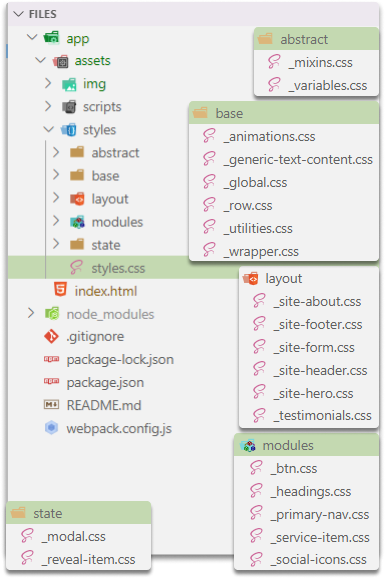
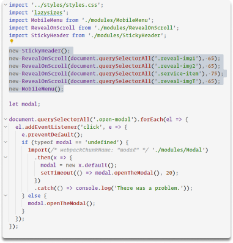

étude de cas — 2018
"Git" A Workflow
Ce projet d'étude a lié la conception du Design, la communication client, le paradigme OOP, l'optimsation, la performance... Un travail propre et évolutif avec un workflow automatisé.
Objectifs
Prendre en charge un projet utilisant les méthodes, outils et concepts professionnels.
Stack
HTML5, CSS3, Vanilla Javascript
NPM, Git
WebPack
Topics
BEM, Atomic Design
Files Architecture, Javascript, Automation
Plugins & Loaders
Problème
Devant la difficulté de formation en France, l'approche de développement web reste très sommaire. Il a été, sur ce projet, un réel défi de produire seul usant d'un workflow automatisé, de concepts UI/UX modernes et de prendre en main des outils & plugins offrant ainsi une approche très professionnelle du métier de développeur web.
La première approche du "web development" est assez simple, l'intégration de toutes ses problématiques est tout autre. Le métier de développeur nous impose une reflexion en profondeur sur les diverses problématiques que l'on pourrait rencontrer mais également l'apprentissage de concepts fondamentaux, acquis par l'expérience... Ce projet expose la démarche frontend, tentant ainsi d'aborder le travail en amont avec le client et les équipes "Design" jusque plus tard, vers le backend et les équipes "Dev Ops".
Sur le projet, la réflexion du Design s'est vue très enrichissante, m'accompagnant vers les concepts de charte graphique, d'Atomic Design, des "Design System", de l'utilisation de Figma... Une certaine appétence pour le Design m'a poussé à aller chercher plus loin, m'aidant ainsi à pouvoir aujourd'hui, comprendre les problématiques des équpes travaillant en amont, des utilisateurs et celles des développeurs.
Côté UX, le travail est moins développé car les besoins du client pour lequel a été adapté cette template, étant sommaire, il a été cohérent d'aller vers l'objectif qui se résumait en deux points: avoir une visibilité sur le web et pouvoir récupérer d'autres contacts. Il est nécessaire d'adapter le projet répondant au besoin du client, de lui faire des propositions mais de ne pas vouloir en faire trop non plus.
L'expérience utilisateur se devait d'être malgré tout efficace. Pour cela, nous avons misé sur l'idée que l'expérience utilisateur se devait d'être agréable, que le site se devait d'être performant, et que le seul objectif était alors de guider le visiteur vers le "C.T.A Button". Nous gardons toujours la possibilité de développer le projet facilement, se donnant les moyens de rajouter une section "prices cards", un systême de reservation / paiement, de rajouter des pages par exemple pour une activité de blog...
Concernant le développement, des ajustements étaient nécessaires. L'utilisation de la librairie "Lodash", de quelques "packages", dépendances du projet et plus particuliérement des "packages de développement", principalement liés à mon environnement de travail sur ce projet.
Le workflow, comprend de nombreux outils, plugins, loaders, techniques & méthodes de production. Il est de notre responsabilité de proposer un travail de qualité et tout ces détails nous aident en ce sens mais pas que... L'automatisation de notre workflow notamment ici par le biais du "Modules Bundler" Webpack, nous offre la possibilité de gagner en confort ainsi qu'en productivité. En tant que Junior, cela nous apporte également une bonne dose de confiance ;)
Le Développeur Frontend est impacté de par sa position "d'entre deux". Il est la liaison entre deux mondes bien différents: le "Web Design" et le "Dev Ops". J'ai décidé en début 2018 de me focaliser d'abord sur la maitrise de mon travail selon cette première approche.
Comment l'approche du travail sur le design peut avoir un impact sur l'ensemble des travaux...
Commencer à matriser son travail induit l'idée de réiterer les pratiques, de garder du recul et de savoir manipuler les outils, y mellant les bonnes pratiques tout gagnant une certaine visibilité. Intégrer l'approche "Design", a été une opportunité de comprendre les enjeux techniques qui allaient m'être démontrés dès lors que j'ai commencé à implémenter mes premiers "React components" plus tard dans mon apprentissage.
Tout comme l'algorithmie, la notion de "Clean Code" prenait tout son sens alors que je comprenais que si la structure HTML ou bien la gestion du CSSOM étaient mal prise en main, alors l'implémentation de code javascript serait un "enfer". Il semble être difficile d'apporter de la valeur au CSS. Son potentiel est énorme mais son impact sur un projet reste limité.
Intégrer une maquette se doit d'être cohérent. On doit répondre à des exigences techniques mais aussi pouvoir faire des propositions si cela peut nous amener vers des contraintes importantes concernant le produit. Cela nous rapproche vers plusieurs principes essentiels comme: la propreté et la maintenance du code, la performance, la notion de "separate concerns", les "Web Accessibilities"...
Le rôle de "Dév Front" doit répondre à certaines exigences qui visent dans l'absolue à livrer le produit idéal au client. Il a pour cela la capacité de conceptualiser l'application dans sa globalité pour pouvoir répondre aux besoins du "Dev Ops" et faire des propositions mais il doit également prendre en compte l'expertise des équipes "Design" afin que leur travail prenne forme et que l'on puisse s'accorder sur la faisabilité, les problématiques que l'on pourrait rencontrer.
Il parait essentiel de démontrer d'une qualité de communication Technique avancée...
Depuis la "B.E.M Methodology" vers les React Components
La conception des patterns, la visualisation de Blocks, d'Elements, la différenciation avec les Modifiers. Cela m'a poussé à approfondir certains sujets tels que la prise en main du CSS "Box Model", l'apprentissage de "l'Atomic Design" et pouvoir faire évoluer rapidement et proprement mes projets. Cette méthodologie m'a clairement aidé à mettre du sens à mes projets, que ce soit par la suite, pour l'organisation de mon architecture de fichiers, pour Javascript et la manipulation d'éléments dans le DOM, la conception du "States Management" ou bien la création de "React Components" sur de futurs projets...
Suivant la notion "d'encapsulation", j'ai pris le parti dans ce projet de développer les scripts en suivant le paradigme "OOP".
La notion "d'encapsulation" est primordiale avec javascript qui est voué à se comporter différemment des autres languages. Il se différencie par exemple de par les "Data Mutations" ou bien les particularités de son "this key word".
Il semble que Javascript a plus de "libertés"...
Kyle Simpson, l'auteur de la série de livres "You don't know JS", nous rappelle que même si Javascript ne parait pas très adapté aux concepts liés aux "class", il reste tout à fait orienté Objet.
Ce projet ne met pas en évidence les notions d' "Inheritance" ou de "Polymorphism" liés au pardigme "OOP", seulement l' "Encapsulation" et l' "Abstraction" pour "les calculs viewport pour le scrolling ou resizing"...
Main App.js — Il est ici le point d'entrée des modules javascript. On peux voir la syntaxe ES6 d'import de Modules. J'y importe ici le module lazysizes pour la gestion du chargement des images, les styles CSS compilés ainsi que les classes Javascript
MobileMenu.js — Un module javascript "clean & simple", j'ajoute et supprime trois classes CSS sur des éléments ciblés du DOM lors du "click event". La fonction flêchée permet ici d'éviter le problème de "scope" lié aux fonctions. On reste ainsi sur le "scope" du module.
Throttle & Debounce
Pour des raisons d'optimisation, l'ajout de la librairie Lodash a été nécessaire pour pouvoir améliorer les performances javascript sur les "events" de "scrolling" et de "resizing". Seules les fonctions "Throttle & Debounce" ont été importées dans le projet, toujours pour des raisons de performances, limitant la taille de l'import au chargement. Pour implémenter ces "events", j'ai du établir une calculation sur le "Window Object" dès lors que l'utilisateur ira "scroller" ou redimensionner sa page web. Pour pouvoir limiter ces opérations, avoir plus de controle sur le code et optimiser celui-ci, l'utilisation de Lodash a été vraiment utile.
Automation Workflow
L'environnement de travail automatisé est une pratique qui nous permet de gagner du temps, du confort et d'autres commodités. On peut ainsi y implémenter un serveur de développement, un "autoloader", un process divisé en différents modes (build, dev), une gestion de nos fichiers et de nombreux autres "features"...
Pour les modes de développement, on crée une variable assignée à un objet par exemple pour nos configurations avec différentes propriétés et sous-propriétés telles que le point d'entrée, le module, les plugins, les loaders, l'utilisation, les règles... Puis, on va controler ces modes par une structure implémentant la configuration que l'on souhaite en sortie, que ce soit pour le développement ou la production.
Avant — On vient d'abord, gràce à Nodejs et NPM définir le "path" et la "currentTask", puis définir nos "objets de configuration" pour finalement créer deux modes de développement. Nous lançons ici la commande "npm run build"...
Après — Nous obtenons en sortie les fichiers prêts à être déployé sur le web. Pour le mode "développement", Webpack compile le CSS, crée un fichier "bundle.js, puis en local, lance un serveur sur le localhost, accessible sur les navigateurs.
Webpack
J'ai pu utiliser Gulp & Browserify au début, puis je suis rapidement passé à Webpack...
Ce "Modules Bundler" prend comme point d'entrée un fichier javascript pour gérer l'ensemble de notre projet. Il vient alors, selon les loaders & plugins, et la configuration pré-établie, créer un fichier en sortie regroupant le code pour, soit l'envoyer sur le serveur de développement, soit l'optimiser pour le déploiement.
Pourquoi le "Workflow Automation" a tant gagné en popularité?
Le "Workflow" automatisé est un réel atout pour le développeur. Plus que du confort, il participe à augmenter la productivité, d'autant plus de par sa grande diversité de "Loaders & Plugins" que l'on peut configurer. Il permet ainsi tout un tas de configurations possible aussi différentes les unes des autres...
- 01. normalize & lazysizes: un reset du CSS, une gestion de chargement des images.
- 02. postcss: transforme le CSS avec des plugins JS.
- 03. babel: le fameux "compiler" de Javascript.
- 04. autoprefixer: vient ajouter pour nous les "prefix" CSS.
- 05. css-loader & style loaders: va analyser le CSS et retourner les imports et url(...), puis sera inséré dans le DOM.
- 06. clean-webpack-plugin: va trier tout les fichiers en sortie de Webpack lors du "build" et "rebuild" process.
- 08. cssnano: va optimiser la taille du fichier CSS formatté.
- 08. mini-css-extract-plugin: crée un fichier CSS personnalisé pour chaque fichier Js qui en contient.
- 07. html-webpack-plugin: va générer le fichier HTML incluant le "bundle" de Webpack, avec de nombreuses options de configurations possible.
- 09. fs-extra: ajoute des méthodes non incluses dans le package fs de Nodejs
Focusing — best practices, best organization, best product...
Devant l'étendue de possibilités, il était important de faire des choix et de prendre de l'expérience. Il fallait rester focalisé sur les tâches à accomplir, et, ainsi cultiver cette approche du travail.
Tout le temps et toute l'attention dédiés à mes projets m'ont permis de grandir en professionnel.
Il me fallait développer ces capacités comme savoir faire des recherches, savoir se baser sur de la documentation, savoir prendre en main les outils, les techniques, les méthodes de travail, multiplier mes sources, m'informer, parfois prendre un peu de recul, améliorer mes pratiques, revoir, reprendre & organiser mon code, ma structure de fichiers...
Etant très attaché à l'aspect qualitatif du travail, j'ai pu gagné ainsi en productivité. Pour cela il me fallait de meilleures pratiques, une meilleure organisation car, au final, je voulais pouvoir proposer un meilleur produit.
Benefits
Depuis Janvier 2018, j'ai pu réitérer les pratiques, pousser les raisonnements, essayer d'autres alternatives...
Concevoir l'organisation de mon code, de mes fichiers, de l'architecture, pouvoir mettre en place un "set up" adapté, savoir configurer mes outils et finalement avoir une compréhension profonde du Javascript se sont révélés être concrètement bénéfique.
Manipuler Node/NPM, Git, Webpack, Javascript m'a fait grandir techniquement. Cela m'a ouvert la voie à des sujets passionnants comme les "designs patterns", le "javascript engine" ou bien les paradigmes de programmation.
Je pense qu'il est bon de rester curieux, d'être alerte, sans cesse en quête de recherches, de questions, de réponses. Cela m'a notamment aidé à développer cette capacité technique de communication.
Files Architecture
Webpack Config

Javascript
Suite du projet ...
Ce produit peut facilement être implémenté de nouvelles pages, de nouvelles sections, de nouvelles fonctionnalités. Cependant, pour la raison de ma formation, j'ai décidé de le développer comme un petit C.M.S avec un dashboard utilisant le Framework CSS Bootstrap, un backend en PHP et une simple base de données relationnelle.
- SEO ↵ & Web Accessibility
- Bootstrap4 Dashboard ↵
- Backend PHP / MySQL ↵